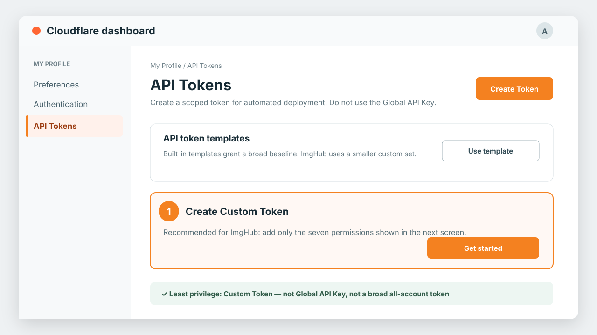
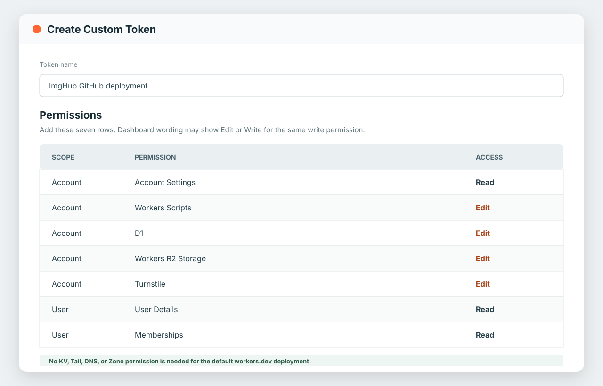
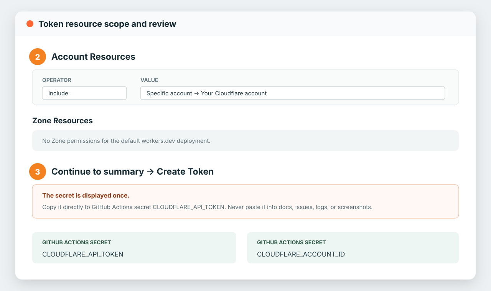

选择部署方式
最快开始。自动识别的部署命令会先初始化 D1、R2 和 Turnstile，再完成 Worker 部署。
显式初始化资源、应用初始 D1 schema、配置 Turnstile、部署每日保留任务和 Worker。
develop 使用无 Secret CI，main 稳定部署，并包含 D1/R2 初始化和定时后端任务。
通过 Wrangler 在本地持久化 D1/R2，无需远端资源。
命令行一键部署
安装 Node.js 22 或更高版本后运行：
git clone https://github.com/tenfyzhong/img-hub.git
cd img-hub
./deploy.sh脚本按需打开 Wrangler 登录，创建或复用 img-hub-db、img-hub-files 与 managed Turnstile Widget，应用初始 D1 schema，把 Widget 私钥写入 Worker Secret，并部署每日保留任务。
自定义名称和区域
IMG_HUB_DATABASE_NAME=my-hub-db \
IMG_HUB_BUCKET_NAME=my-hub-files \
IMG_HUB_D1_LOCATION=apac \
IMG_HUB_R2_LOCATION=apac \
IMG_HUB_TURNSTILE_DOMAINS=images.example.com \
IMG_HUB_WECHAT_VERIFY_FILENAME=30192898bf0120ae25f69bdce9e25e77.txt \
IMG_HUB_WECHAT_VERIFY_CONTENT=verification-content-from-wechat \
./deploy.sh脚本可以重复执行，而且不会删除 D1 数据库或 R2 bucket。生成的 workers.dev 域名会自动识别；IMG_HUB_TURNSTILE_DOMAINS 用于添加逗号分隔的自定义域名。同时提供两个可选的微信验证变量，即可把内容原样发布到站点根路径，而且不会修改仓库中的 public/ 目录。
创建 Cloudflare 部署 Token
GitHub Actions 应使用 用户 API Token。进入 My Profile → API Tokens，点击 Create Token，然后选择 创建自定义令牌（Create Custom Token）。这是推荐的最小权限方式，因为 Cloudflare 没有一个内置模板能与 ImgHub 的权限完全一致。不要使用旧式 Global API Key。

Edit Cloudflare Workers 模板虽然更快，但权限比 ImgHub 所需范围更大：它包含 KV、Tail 和 Zone Route，却没有 D1 与 Turnstile。如果从该模板开始，请删除无用权限，再补充 D1 和 Turnstile。下面的自定义权限更清晰，也更符合最小权限原则。
只添加以下七项权限
| 范围 | 权限 | 访问级别 | ImgHub 用途 |
|---|---|---|---|
| Account | Account Settings | Read | 让 Wrangler 识别并校验所选账号。 |
| Account | Workers Scripts | Edit | 部署 Worker、静态资源、Binding、定时任务和 Secret。 |
| Account | D1 | Edit | 创建或复用 D1，并应用初始 Schema。 |
| Account | Workers R2 Storage | Edit | 创建或复用 R2 Bucket，并配置部署 Binding。 |
| Account | Turnstile | Edit | 创建、读取和更新登录验证 Widget。 |
| User | User Details | Read | 允许 Wrangler 完成身份校验。 |
| User | Memberships | Read | 允许 Wrangler 确认用户所属账号。 |
合并写法是 Account Settings Read、Workers Scripts Edit、D1 Edit、Workers R2 Storage Edit、Turnstile Edit、User Details Read 和 Memberships Read。Cloudflare 的不同界面可能把写权限显示为 Write 或 Edit；例如 Turnstile Sites Write 表示的就是这里需要的 Turnstile 写权限。

限制账号范围并安全保存一次
- 在 Account Resources 选择 Include → 指定账号（Specific account）→ 实际部署账号。除非一个仓库确实要管理全部账号，否则不要选择所有账号。
- 默认
workers.dev部署不需要任何 Zone 权限。只有以后给特定 Zone 配置 Worker Route 时，才增加 Zone → Workers Routes Edit。 - 点击 Continue to summary，确认七项权限和一个账号无误，然后点击 Create Token。
- 把只显示一次的 Secret 直接保存到 GitHub Actions Secret
CLOUDFLARE_API_TOKEN；再把所选账号 ID 单独保存为CLOUDFLARE_ACCOUNT_ID。

GitHub Actions 部署
- 需要 Sync fork 更新时 Fork 仓库；需要独立历史时从模板创建。维护者需要先在 Settings → General → Template repository 开启模板选项。
- 按照上面的最小权限 Token 指引创建 Cloudflare Token；自动验证配置需要 Turnstile 写权限。
- 添加 Action Secrets：
CLOUDFLARE_API_TOKEN和CLOUDFLARE_ACCOUNT_ID。 - 如果微信提供了验证文件，在 Settings → Secrets and variables → Actions → Variables 中添加 Repository Variables
IMG_HUB_WECHAT_VERIFY_FILENAME和IMG_HUB_WECHAT_VERIFY_CONTENT。 - 手工运行 Deploy to Cloudflare，或推送到
main。
可选的微信根路径验证文件
必须两个变量都配置或都不配置。文件名填写微信给出的根路径 .txt 名称，例如 30192898bf0120ae25f69bdce9e25e77.txt；内容要完整复制。安全文件名只能包含字母、数字、_、-，不能包含目录、空格或其他扩展名。只配置一项或文件名不安全时，脚本会在改动 Cloudflare 资源之前失败。
部署会创建隔离的静态资源临时副本，不额外添加换行地写入内容，发布到类似 https://images.example.com/30192898bf0120ae25f69bdce9e25e77.txt 的地址，并在结束后删除副本；不会修改或提交 public/。验证内容部署后本来就会公开，因此使用 Repository Variable。deploy.yml 和 release.yml 会读取当前仓库自己的相同变量，Fork 也彼此隔离。
main 始终稳定且可部署，开发代码通过 develop 集成。无 Secret 的 CI 验证 PR，每次 main 更新都运行稳定构建。分支保护和发布流程见贡献指南。
同一份部署 workflow 适用于原仓库与每个 fork。每个仓库使用自己的 Secrets，所以只会部署到仓库所有者自己的 Cloudflare 账号。默认前缀 img-hub-{repository-id} 可避免不同仓库的 Worker、D1、R2 重名；可用 Repository Variable IMG_HUB_RESOURCE_PREFIX 覆盖。
稳定工作流先测试和构建，然后初始化 D1/R2/Turnstile、应用初始 D1 schema，并带每日保留任务和 Turnstile Secret 部署。未配置 Cloudflare Secrets 时会明确跳过部署，而不是让 Fork 的验证失败。Fork 用户先启用一次 Actions，保持 main 没有自定义提交，再使用 Sync fork → Update branch；模板创建的仓库没有该同步关系。
销毁 Cloudflare 部署
危险——这是毁灭性且不可恢复的操作。 仅对可随时丢弃的测试部署手工运行。它会永久删除对应 Worker、全部 R2 object 和 bucket、D1，以及托管的 Turnstile Widget，且不会创建备份。
在 main 上打开 Actions → DESTRUCTIVE: Destroy Cloudflare deployment，依次输入准确的 owner/repository、DESTROY owner/repository，并确认永久数据丢失。任一项不匹配都会拒绝执行；workflow 使用与部署相同的仓库专属前缀。清空 R2 前必须先移除 Bucket Lock。它不会删除 DNS、手工创建的 Route 或这个命名部署之外的资源。
发布本指引
在仓库 Settings → Pages 中把 Source 设为 GitHub Actions。Pages workflow 会发布 docs/ 下的中英文页面。
API Key 与 Agent Skill
完成临时密码修改后，打开侧边栏 安全 下方独立且全宽的 API Key 菜单并创建带名称的 Key；修改密码卡片同样占满内容行。多个 Key 只会在独立页面向下展开，不会影响密码表单的位置。请立即复制只显示一次的 imh_...；系统只保存哈希。Key 可撤销、可设置过期时间，且只能访问所属用户自己的文件和文本。
把 skills/img-hub 复制到 AI Agent 的 skills 目录，并为 Agent 进程配置：
export IMG_HUB_URL=https://images.example.com
export IMG_HUB_API_KEY=imh_your_key_shown_once内置客户端支持列出、上传、替换、删除文件，以及发布或替换文本。不要把 IMG_HUB_API_KEY 写入 prompt、日志或代码仓库。
Chrome、Edge、Firefox 浏览器插件
每个 GitHub Release 提供 Chrome/Edge 共用的 Chromium ZIP 与 Firefox ZIP。两个包都不包含固定服务域名；在插件中填写实际部署 URL、授权访问该 Origin，然后登录。
解压 Chromium 包，在扩展管理页用 Developer mode → Load unpacked 加载。Firefox 开发安装可打开 about:debugging#/runtime/this-firefox，选择 Load Temporary Add-on。插件只在扩展本地保存部署 URL 和登录 Token，不保存密码，支持上传、列表、复制 URL、替换和删除。
npm install
npm run build:extensionGitHub Release 与商店发布
先修改 package.json 的纯数字版本，将发布代码合入 main，再推送匹配 Tag，例如 v0.3.0。发布 workflow 会拒绝不属于 main 的 Tag，运行测试并构建两个通用插件包；配置 Cloudflare 凭据时部署到当前仓库自己的账号；最后创建 GitHub Release。
每个商店只有在完整配置对应 Secrets 时才自动发布：
- Chrome：
CHROME_PUBLISHER_ID、CHROME_EXTENSION_ID、CHROME_CLIENT_ID、CHROME_CLIENT_SECRET、CHROME_REFRESH_TOKEN - Edge：
EDGE_PRODUCT_ID、EDGE_CLIENT_ID、EDGE_API_KEY - Firefox：
WEB_EXT_API_KEY、WEB_EXT_API_SECRET
需要先在各开发者后台创建一次商店条目；缺少一组 Secret 时只跳过对应商店。
首次启动与账号
系统没有默认密码。管理员用户名固定为 admin；第一个访问者需要在初始页面设置并确认密码。密码框支持显示/隐藏。管理员存在后初始化入口关闭。
- 管理员创建用户，并通过安全渠道发送临时密码。
- 用户可以用临时密码登录，但修改密码前不能操作文件或文本。
- 管理员重置密码会撤销该用户所有会话，并再次要求首次改密。
密码保存为带盐 PBKDF2-SHA-256 哈希。浏览器访问 Session 有效期为 7 天，轮换式 refresh Session 有效期为 30 天。访问 Session 过期时，网页会自动使用 HttpOnly refresh Cookie 换取新凭据并废弃旧 token；连续 30 天没有刷新则必须重新输入密码。D1 只保存 token 哈希；两个 Cookie 都使用 SameSite=Strict，HTTPS 下启用 Secure。
相同规范化用户名与 Cloudflare 客户端 IP 在 15 分钟内发生 3 次失败登录后，会按需显示 Turnstile。Worker 会校验一次性 Token 的 login action 与当前主机名。D1 只保存 SHA-256 尝试标识和计数；成功登录后立即清除。
浏览器语言
界面根据浏览器语言列表中的第一首选语言选择：以 zh 开头时使用简体中文，其他语言使用英文。顶部的 EN / 中文 可以手工切换，并在当前浏览器本地保存选择。
静态控件、动态列表与消息、确认框、日期、空状态和常见 API 错误均完成翻译。管理员配置的站点外观由两种语言共享；未保存配置时的内置欢迎文案分别提供翻译。
忘记管理员密码
系统没有邮件找回或后门。部署所有者通过内置 D1 工具重置唯一管理员。本地恢复时先停止服务，再运行：
npm run admin:reset
npm run dev:local恢复已部署环境时，先登录 Wrangler，在 D1 中找到准确的数据库名称，并显式选择远程数据库：
npx wrangler login
npm run admin:reset -- --remote --database YOUR_D1_DATABASE_NAME隐藏输入的新密码是临时密码。确认输出的 administrators_reset 为 1，且 administrator_username 为 admin。恢复会撤销管理员全部 Session 和 API Key，把旧版管理员用户名安全地规范为 admin，仅将原用户名作为公开 URL 别名保留；登录后必须设置不同的新密码。如果重置数量为 0，说明选择了错误或尚未初始化的数据库。
GitHub Actions：重置管理员密码
- 打开 Settings → Secrets and variables → Actions，创建或更新
IMG_HUB_ADMIN_RESET_PASSWORD，值为 10–256 个字符的新临时密码。现有CLOUDFLARE_API_TOKEN必须具备 D1 Edit 权限，同时保留CLOUDFLARE_ACCOUNT_ID。 - 打开 Actions → Reset administrator password → Run workflow，输入已部署 D1 的准确数据库名称，并勾选确认框。
- 确认日志中的
administrators_reset为1。使用admin登录，立即设置一个不同的正式密码，然后删除临时 Repository Secret。
该 workflow 只能手动触发，并且绝不会把密码作为 Actions 输入。重置会撤销管理员全部 Session 和 API Key。不要把临时密码填进数据库名、输入框、Issue、截图或日志。
管理端地址、内容审计与禁用账户
系统没有单独的 /admin 地址。打开站点根地址，例如 http://localhost:8787，使用用户名 admin 登录后选择 管理。全新数据库会在同一地址显示设置并确认密码的管理员初始化。如果本地没有出现初始化，说明持久化目录 .wrangler/state/ 已有账号：需要保留数据时使用 npm run admin:reset；需要清除本地测试状态时，先停止服务再运行 npm run local:reset。
内容审计 与 用户管理 是两个独立的管理员菜单，列表都由服务端搜索和分页。用户搜索占满一行，创建用户 从右侧抽屉打开。审计可按文件名、公开 ID、上传者、目录和类型搜索。封禁会永久删除 R2 源对象；即使链接已命中缓存也会返回 404；资源会从上传者列表隐藏，但审计墓碑继续保留。
禁用账户 会撤销该用户的 Session 与 API Key，拒绝登录，并停止访问该账户的全部资源。重新启用允许重新登录，但不会恢复旧凭据。管理员账户不能被禁用。
R2 保留策略
管理员在 站点设置 中填写 1–3650 天，配置保存在 D1，默认值为 91。部署后的 Worker 每日运行定时任务，通过 R2 binding 只列出 users/ 下的对象并删除到期内容。
部署时只移除早期开发版本的固定 img-hub-default-expiration 规则，其他 bucket lifecycle rule 保持不变。
网站不会要求填写 Cloudflare Account ID、bucket 名称或 API Token，也不会保存运行时管理 Token。缩短保留时间前请先备份 D1 和 R2，因为删除不可恢复。
隔离、路径与替换
users/{user-id}/file/trips/lake-20260806T040506123.png
/pub/7b62f18c6d304476a5edc8a4de176cb1?v=1
users/{user-id}/text/notes/hello-20260806T040506123.md
/pub/91ac1f75e0c84353bb9eca92c4f828a0?v=1每个用户 ID 都有独立的内部 file/text 根目录；文件和文本统一使用 /pub/{32 位随机 ID} 公开路由，ID 不带 pub_ 前缀，也不暴露资源类型、用户名、目录或文件名。不支持以前的根路径、/file/、/text/、带前缀的 ID 和带用户名的公开路径。替换保留 object key 和随机公开路径，只递增 D1 version 并返回新的 ?v=。
上传发布 菜单提供等高的上传文件、发布文本与文件外链三个页签，文件外链位于最后。新文件和文本名称会加入毫秒级 UTC 时间戳；文本名留空时按格式自动生成，发布结果与文件一样可以复制 URL/Markdown/HTML。直接上传前浏览器会分块计算 MD5；命中同一用户自己的同大小文件后，会复制成独立 R2 对象而不再发送文件。外链导入支持图片、文档、压缩包、音视频、文本及其他 HTTP(S) 文件，并继续执行私网地址和大小检查。放大的投放区可以点击打开文件选择器，也可接收拖入文件、粘贴的文件和剪贴板图片；粘贴后立即上传并显示进度。外链导入会实时显示已抓取字节和百分比；来源未提供长度时使用不确定进度条，并在抓取结束后提示保存到存储的阶段。独立的 文件管理 菜单把文件和文本混排在同一个资源列表和根目录树中，不再按类型切换，并支持目录筛选、网格/列表视图、复制 URL/Markdown/HTML、替换与删除。发布文本界面支持 Markdown 与受限富文本，两种编辑框尺寸一致；管理卡片会直接预览文本，并把超大或过长图片限制在卡片内部。时间轴会持久记录上传、导入、替换和删除。
文件与文本读取缓存
/pub/7b62…?v=3 这类当前版本的 GET 请求使用 caches.default。系统会先执行轻量 D1 可访问性检查，让封禁状态和账户禁用覆盖旧缓存；检查通过后的缓存命中会跳过大型 R2 object 读取。无效、不存在、已删除、已封禁或已过期的资源都会显示本地化的 ImgHub 404 页面，不泄露具体原因。
写入时响应头为 X-ImgHub-Cache: MISS，命中时为 HIT；无版本、版本错误、额外查询参数或 HEAD 请求为 BYPASS。当前正整数版本使用一年共享缓存，浏览器 max-age=0 会保留每次审计检查。Cache API 条目只存在于各 Cloudflare 数据中心本地。
管理员站点外观配置
进入独立的管理员 站点设置 菜单可修改站点标题、标语、欢迎标题和欢迎说明。配置保存在 D1，字段有明确长度限制，并以纯文本渲染；未保存配置的部署自动使用内置默认值。
本地开发
npm install
npm run dev:local打开 http://localhost:8787。全新的本地数据会先要求为管理员 admin 设置密码；之后可通过真实浏览器界面手工测试账号、上传图片与文本、替换、公开链接、删除、API Key 和站点外观。用测试用户名登录失败 3 次并确认显示 Turnstile。按 Ctrl+C 停止。
该命令显式使用 wrangler dev --local。D1、R2、静态资源和 cache 都只在本机运行，不需要 Cloudflare 凭据，并持久化到已忽略的 .wrangler/state/。本地验证使用 Cloudflare 官方公开的 always-pass 测试密钥；只有手工触发验证时才会访问公开 Siteverify 端点。
从全新的本地安装重新测试
npm run local:reset
npm run dev:local执行重置前先停止服务。重置只删除当前仓库的本地 D1、R2 与 cache 数据，不会接触已部署的 Cloudflare 资源。
自动化本地检查
npm test
npm run test:local单元测试使用内存 double；test:local 还会在隔离且不持久化的 Wrangler 运行时启动完整 Worker。使用 npx wrangler deploy --dry-run 可在不发布的情况下验证生产包。
故障排查
Action 无法创建资源
检查两个 Secret、Cloudflare 账号是否一致，以及 Token 是否拥有 Worker Scripts、D1、R2 权限。
保留任务尚未执行
定时后端每天 UTC 03:00 运行。确认 Worker 包含仓库中的 cron trigger，并绑定了预期的本地或远端 R2。
URL 返回 404 但列表仍有记录
保留任务与 D1 独立执行；object 到期后，所有者可以在列表中删除失效元数据。
替换后仍显示旧内容
复制最新返回的 URL。路径不变，但 ?v= 必须是最新版本。